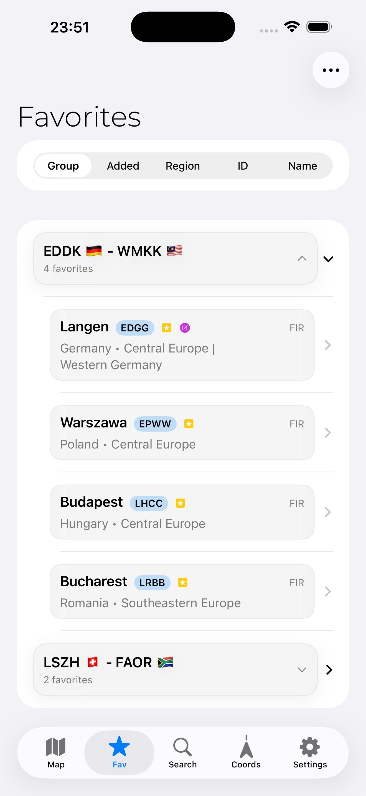
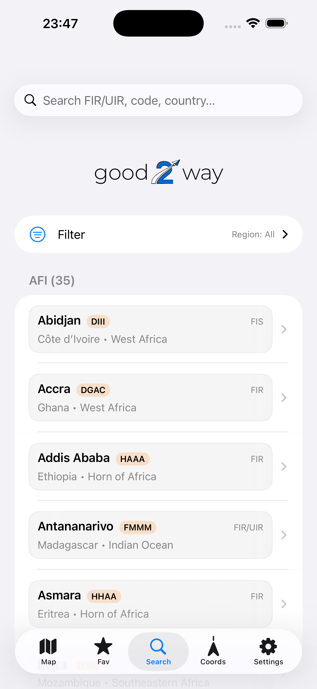
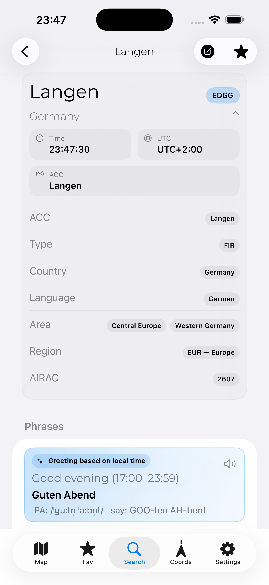
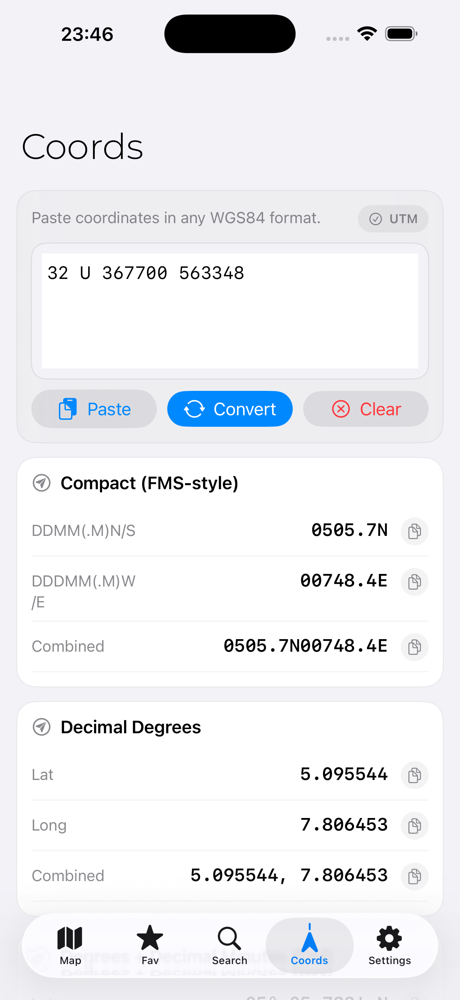
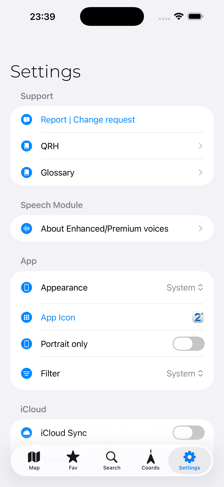

Offline-focused FIR/UIR phrasebook
Access FIR/UIR greetings, phrase examples and relevant metadata even when connectivity is unavailable.
EDWWBremen FIRAvailable offline
good2way is an offline-focused FIR/UIR phrasebook and aviation reference app for pilots — designed for quick familiarisation, efficient preparation and a little more kindness between aviators.



Fast access to useful aviation reference content, designed around the way pilots actually prepare and work.
Access FIR/UIR greetings, phrase examples and relevant metadata even when connectivity is unavailable.
Search by FIR name, identifier, country, region, language, ACC or your own note content.
Save important FIRs and arrange them into custom collections for routes, regions or personal workflows.
Add personal notes with UTC-based timestamps and keep your own reference information close at hand.
Convert between decimal degrees, degrees/minutes/seconds, degrees/decimal minutes, UTM and MGRS in one place.
Synchronize notes, favorites and groups through your own Apple iCloud account.


good2way offers optional non-consumable In-App Purchases for regional FIR/UIR datasets. The WORLD unlock gives access to all included regions and 259 datasets.
🔒 Purchases are processed securely by Apple through the App Store.A built-in manual, quick reference handbook, glossary and changelog help keep important information accessible without leaving the app.
good2way provides non-binding, reference-only information on FIR/UIR greetings, phrase examples and related metadata. It is intended for familiarisation and convenience only.
For operational use, always consult current official sources, including ICAO provisions, State publications such as AIP, AIC and NOTAM, and applicable operator documentation.
good2way is not a flight planning, navigation, performance, fuel, weather, terrain, obstacle or ATC-clearance planning tool.
No account is required. No third-party ads. No advertising tracking.
Read Privacy Policy →For support requests, bug reports, change requests or feedback, get in touch directly.
Visit Support →53773 Hennef, Germany
Owner: Alrik Kaempfert
Download the official iPhone app from the App Store and take your offline-focused FIR/UIR phrasebook, coordinate converter and aviation reference tools with you.
Offline-focused aviation reference, built for iPhone.
Download on theApp Store